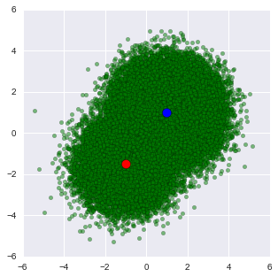

Inference of Gaussian mixture model with ADVI¶
Here, we describe how to use ADVI for inference of Gaussian mixture model. First, we will show that inference with ADVI does not need to modify the stochastic model, just call a function. Then, we will show how to use mini-batch, which is useful for large dataset. In this case, where the model should be slightly changed.
First, create artificial data from a mixuture of two Gaussian components.
%matplotlib inline
import pymc3 as pm
from pymc3 import Normal, Metropolis, sample, MvNormal, Dirichlet, \
DensityDist, find_MAP, NUTS, Slice
import theano.tensor as tt
from theano.tensor.nlinalg import det
import numpy as np
import matplotlib.pyplot as plt
import seaborn as sns
n_samples = 100
rng = np.random.RandomState(123)
ms = np.array([[-1, -1.5], [1, 1]])
ps = np.array([0.2, 0.8])
zs = np.array([rng.multinomial(1, ps) for _ in range(n_samples)]).T
xs = [z[:, np.newaxis] * rng.multivariate_normal(m, np.eye(2), size=n_samples)
for z, m in zip(zs, ms)]
data = np.sum(np.dstack(xs), axis=2)
plt.figure(figsize=(5, 5))
plt.scatter(data[:, 0], data[:, 1], c='g', alpha=0.5)
plt.scatter(ms[0, 0], ms[0, 1], c='r', s=100)
plt.scatter(ms[1, 0], ms[1, 1], c='b', s=100)
<matplotlib.collections.PathCollection at 0x12553ea50>

Gaussian mixture models are usually constructed with categorical random variables. However, any discrete rvs does not fit ADVI. Here, class assignment variables are marginalized out, giving weighted sum of the probability for the gaussian components. The log likelihood of the total probability is calculated using logsumexp, which is a standard technique for making this kind of calculation stable.
In the below code, DensityDist class is used as the likelihood term. The second argument, logp_gmix(mus, pi, np.eye(2)), is a python function which recieves observations (denoted by ‘value’) and returns the tensor representation of the log-likelihood.
from pymc3.math import LogSumExp
# Log likelihood of normal distribution
def logp_normal(mu, tau, value):
# log probability of individual samples
k = tau.shape[0]
delta = lambda mu: value - mu
return (-1 / 2.) * (k * tt.log(2 * np.pi) + tt.log(1./det(tau)) +
(delta(mu).dot(tau) * delta(mu)).sum(axis=1))
# Log likelihood of Gaussian mixture distribution
def logp_gmix(mus, pi, tau):
def logp_(value):
logps = [tt.log(pi[i]) + logp_normal(mu, tau, value)
for i, mu in enumerate(mus)]
return tt.sum(LogSumExp(tt.stacklists(logps)[:, :n_samples], axis=0))
return logp_
with pm.Model() as model:
mus = [MvNormal('mu_%d' % i, mu=np.zeros(2), tau=0.1 * np.eye(2), shape=(2,))
for i in range(2)]
pi = Dirichlet('pi', a=0.1 * np.ones(2), shape=(2,))
xs = DensityDist('x', logp_gmix(mus, pi, np.eye(2)), observed=data)
Applied stickbreaking-transform to pi and added transformed pi_stickbreaking to model.
For comparison with ADVI, run MCMC.
with model:
start = find_MAP()
step = Metropolis()
trace = sample(1000, step, start=start)
[-----------------100%-----------------] 1000 of 1000 complete in 0.5 sec
Check posterior of component means and weights. We can see that the MCMC samples of the component mean for the lower-left component varied more than the upper-right due to the difference of the sample size of these clusters.
plt.figure(figsize=(5, 5))
plt.scatter(data[:, 0], data[:, 1], alpha=0.5, c='g')
mu_0, mu_1 = trace['mu_0'], trace['mu_1']
plt.scatter(mu_0[-500:, 0], mu_0[-500:, 1], c="r", s=10)
plt.scatter(mu_1[-500:, 0], mu_1[-500:, 1], c="b", s=10)
plt.xlim(-6, 6)
plt.ylim(-6, 6)
(-6, 6)

sns.barplot([1, 2], np.mean(trace['pi'][-5000:], axis=0),
palette=['red', 'blue'])
<matplotlib.axes._subplots.AxesSubplot at 0x127754f50>

We can use the same model with ADVI as follows.
with pm.Model() as model:
mus = [MvNormal('mu_%d' % i, mu=np.zeros(2), tau=0.1 * np.eye(2), shape=(2,))
for i in range(2)]
pi = Dirichlet('pi', a=0.1 * np.ones(2), shape=(2,))
xs = DensityDist('x', logp_gmix(mus, pi, np.eye(2)), observed=data)
%time means, sds, elbos = pm.variational.advi( \
model=model, n=1000, learning_rate=1e-1)
Applied stickbreaking-transform to pi and added transformed pi_stickbreaking to model.
Iteration 0 [0%]: ELBO = -412.12
Iteration 100 [10%]: ELBO = -357.93
Iteration 200 [20%]: ELBO = -328.79
Iteration 300 [30%]: ELBO = -324.32
Iteration 400 [40%]: ELBO = -321.59
Iteration 500 [50%]: ELBO = -322.9
Iteration 600 [60%]: ELBO = -324.97
Iteration 700 [70%]: ELBO = -323.26
Iteration 800 [80%]: ELBO = -322.76
Iteration 900 [90%]: ELBO = -322.89
Finished [100%]: ELBO = -324.32
CPU times: user 3.02 s, sys: 20.7 ms, total: 3.05 s
Wall time: 3.05 s
The function returns three variables. ‘means’ and ‘sds’ are the mean and standart deviations of the variational posterior. Note that these values are in the transformed space, not in the original space. For random variables in the real line, e.g., means of the Gaussian components, no transformation is applied. Then we can see the variational posterior in the original space.
from copy import deepcopy
mu_0, sd_0 = means['mu_0'], sds['mu_0']
mu_1, sd_1 = means['mu_1'], sds['mu_1']
def logp_normal_np(mu, tau, value):
# log probability of individual samples
k = tau.shape[0]
delta = lambda mu: value - mu
return (-1 / 2.) * (k * np.log(2 * np.pi) + np.log(1./np.linalg.det(tau)) +
(delta(mu).dot(tau) * delta(mu)).sum(axis=1))
def threshold(zz):
zz_ = deepcopy(zz)
zz_[zz < np.max(zz) * 1e-2] = None
return zz_
def plot_logp_normal(ax, mu, sd, cmap):
f = lambda value: np.exp(logp_normal_np(mu, np.diag(1 / sd**2), value))
g = lambda mu, sd: np.arange(mu - 3, mu + 3, .1)
xx, yy = np.meshgrid(g(mu[0], sd[0]), g(mu[1], sd[1]))
zz = f(np.vstack((xx.reshape(-1), yy.reshape(-1))).T).reshape(xx.shape)
ax.contourf(xx, yy, threshold(zz), cmap=cmap, alpha=0.9)
fig, ax = plt.subplots(figsize=(5, 5))
plt.scatter(data[:, 0], data[:, 1], alpha=0.5, c='g')
plot_logp_normal(ax, mu_0, sd_0, cmap='Reds')
plot_logp_normal(ax, mu_1, sd_1, cmap='Blues')
plt.xlim(-6, 6)
plt.ylim(-6, 6)
(-6, 6)

TODO: We need to backward-transform ‘pi’, which is transformed by ‘stick_breaking’.
‘elbos’ contains the trace of ELBO, showing stochastic convergence of the algorithm.
plt.plot(elbos)
[<matplotlib.lines.Line2D at 0x124fff050>]

To demonstrate that ADVI works for large dataset with mini-batch, let’s create 100,000 samples from the same mixture distribution.
n_samples = 100000
zs = np.array([rng.multinomial(1, ps) for _ in range(n_samples)]).T
xs = [z[:, np.newaxis] * rng.multivariate_normal(m, np.eye(2), size=n_samples)
for z, m in zip(zs, ms)]
data = np.sum(np.dstack(xs), axis=2)
plt.figure(figsize=(5, 5))
plt.scatter(data[:, 0], data[:, 1], c='g', alpha=0.5)
plt.scatter(ms[0, 0], ms[0, 1], c='r', s=100)
plt.scatter(ms[1, 0], ms[1, 1], c='b', s=100)
plt.xlim(-6, 6)
plt.ylim(-6, 6)
(-6, 6)

MCMC took 55 seconds, 20 times longer than the small dataset.
with pm.Model() as model:
mus = [MvNormal('mu_%d' % i, mu=np.zeros(2), tau=0.1 * np.eye(2), shape=(2,))
for i in range(2)]
pi = Dirichlet('pi', a=0.1 * np.ones(2), shape=(2,))
xs = DensityDist('x', logp_gmix(mus, pi, np.eye(2)), observed=data)
start = find_MAP()
step = Metropolis()
trace = sample(1000, step, start=start)
Applied stickbreaking-transform to pi and added transformed pi_stickbreaking to model.
[-----------------100%-----------------] 1000 of 1000 complete in 55.4 sec
Posterior samples are concentrated on the true means, so looks like single point for each component.
plt.figure(figsize=(5, 5))
plt.scatter(data[:, 0], data[:, 1], alpha=0.5, c='g')
mu_0, mu_1 = trace['mu_0'], trace['mu_1']
plt.scatter(mu_0[-500:, 0], mu_0[-500:, 1], c="r", s=50)
plt.scatter(mu_1[-500:, 0], mu_1[-500:, 1], c="b", s=50)
plt.xlim(-6, 6)
plt.ylim(-6, 6)
(-6, 6)

For ADVI with mini-batch, put theano tensor on the observed variable of the ObservedRV. The tensor will be replaced with mini-batches. Because of the difference of the size of mini-batch and whole samples, the log-likelihood term should be appropriately scaled. To tell the log-likelihood term, we need to give ObservedRV objects (‘minibatch_RVs’ below) where mini-batch is put. Also we should keep the tensor (‘minibatch_tensors’).
data_t = tt.matrix()
data_t.tag.test_value = np.zeros((1, 2)).astype(float)
with pm.Model() as model:
mus = [MvNormal('mu_%d' % i, mu=np.zeros(2), tau=0.1 * np.eye(2), shape=(2,))
for i in range(2)]
pi = Dirichlet('pi', a=0.1 * np.ones(2), shape=(2,))
xs = DensityDist('x', logp_gmix(mus, pi, np.eye(2)), observed=data_t)
minibatch_tensors = [data_t]
minibatch_RVs = [xs]
Applied stickbreaking-transform to pi and added transformed pi_stickbreaking to model.
Make a generator for mini-batches of size 200. Here, we take random sampling strategy to make mini-batches.
def create_minibatch(data):
rng = np.random.RandomState(0)
while True:
ixs = rng.randint(len(data), size=200)
yield data[ixs]
minibatches = [create_minibatch(data)]
total_size = len(data)
Run ADVI. It’s much faster than MCMC, though the problem here is simple and it’s not a fair comparison.
# Used only to write the function call in single line for using %time
# is there more smart way?
def f():
return pm.variational.advi_minibatch(
model=model, n=1000, minibatch_tensors=minibatch_tensors,
minibatch_RVs=minibatch_RVs, minibatches=minibatches,
total_size=total_size, learning_rate=1e-1)
%time means, sds, elbos = f()
Iteration 0 [0%]: ELBO = -424201.48
Iteration 100 [10%]: ELBO = -350008.63
Iteration 200 [20%]: ELBO = -317598.75
Iteration 300 [30%]: ELBO = -314518.88
Iteration 400 [40%]: ELBO = -328082.93
Iteration 500 [50%]: ELBO = -320686.56
Iteration 600 [60%]: ELBO = -314541.02
Iteration 700 [70%]: ELBO = -341864.92
Iteration 800 [80%]: ELBO = -320904.08
Iteration 900 [90%]: ELBO = -322863.3
Finished [100%]: ELBO = -313688.76
CPU times: user 2.7 s, sys: 34.4 ms, total: 2.74 s
Wall time: 2.72 s
The result is almost the same.
from copy import deepcopy
mu_0, sd_0 = means['mu_0'], sds['mu_0']
mu_1, sd_1 = means['mu_1'], sds['mu_1']
fig, ax = plt.subplots(figsize=(5, 5))
plt.scatter(data[:, 0], data[:, 1], alpha=0.5, c='g')
plt.scatter(mu_0[0], mu_0[1], c="r", s=50)
plt.scatter(mu_1[0], mu_1[1], c="b", s=50)
plt.xlim(-6, 6)
plt.ylim(-6, 6)
(-6, 6)

The variance of the trace of ELBO is larger than without mini-batch because of the subsampling from the whole samples.
plt.plot(elbos)
[<matplotlib.lines.Line2D at 0x125263210>]